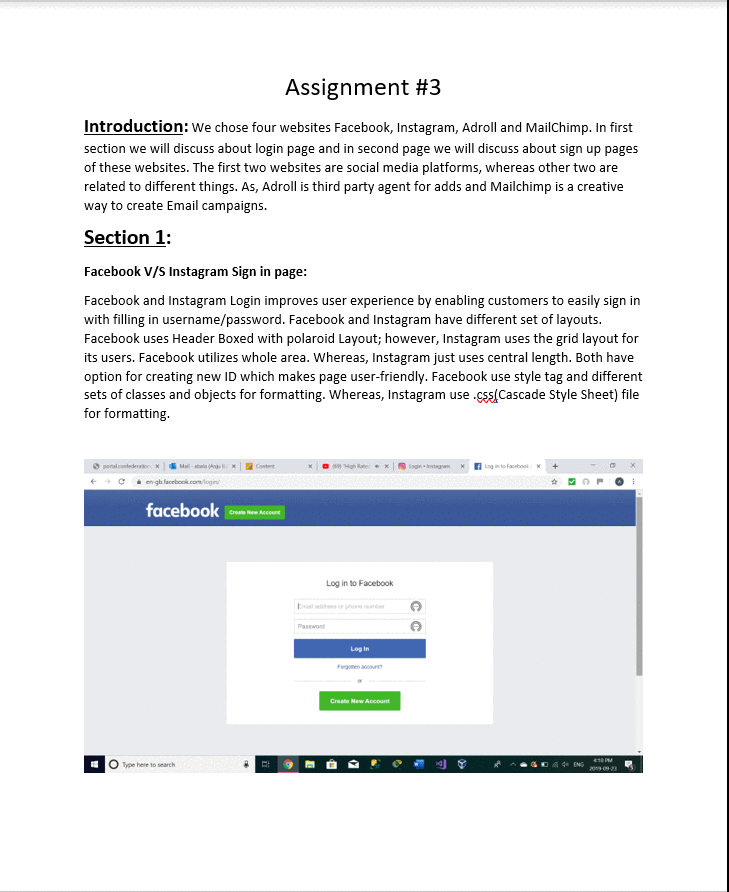

Projects
Checkout a few of my works
My First Week's Project

|
This was my first week in class. It was a very basic html knowledge. In this week we learned various Headings, styling, formatting, to color text and background and how to add background images. |
My Second Week's Project

|
This was my second week in class. It was basic html knowledge. In this week we learned table tags, various styling, formatting, to color text and background and how to add background images in tables. Along with that I learned "<a>" tag. The "<a>" tag defines a hyperlink, which is used to link from one page to another. The most important attribute of the "a" element is the href attribute, which indicates the link's destination which is used to move on next page, address, or to move to some website. There was the 2nd part where we had to change our prototype for Part I by rearranging the fields, so that each row have a similar look as the given picture. |
My Third Week's Project
|  |
This was my Third week in class. In this exercise we had to work on the design of a website, elaborate on its visual elements, best practices, user experience, target audience a very basic html knowledge. we had to pick two websites areas/functionalities to describe them. Find four websites that uses those areas/functionalities, to make sure the two of these websites have similar content/services and the other two are on different contents/services. In this asiignment I discussed the pros and cons of using each element in a given context. In this week we learned various perspectives in designing. |
My Fourth Week's Project

|
This was my fourth week in class. In this exercise we had to design a webpage for a survey. The goal was to use all the HTML Input Types properly. we had to be creative on the way we use and to show that we can customize the parameters and behaviour of each element, when possible. In this webpage we had to create two forms each with method (POST and GET) and had to explain why we used it. In this week we learned forms and methods (POST and GET), and their importance. |
My Fifth Week's Project
My Seventh Week's Project

|
This was my seventh week in class. In this exercise we had to develop a web page that contains a table element that will be modified dynamically using Javascript. We had to add the tags \<html\> \<head\> \<body\>, we also had to apply some style, aesthetics as important and External CSS file. In this week I learned positioning, centralization, harmonizing colors to make page look good. |
 My Eighth Week's Project
My Eighth Week's Project

|
This was my Eighth week in class. This was my favorite project. In this exercise we had to create a SignUp Form which had validations in it so that user can not leave some specific area blank. We had to create this form using CSS stylesheet and JavaScript file. In this week I learned various validation controls. |